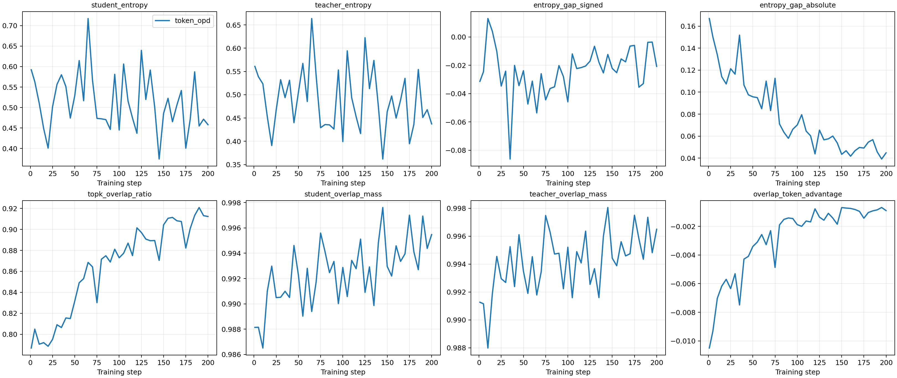
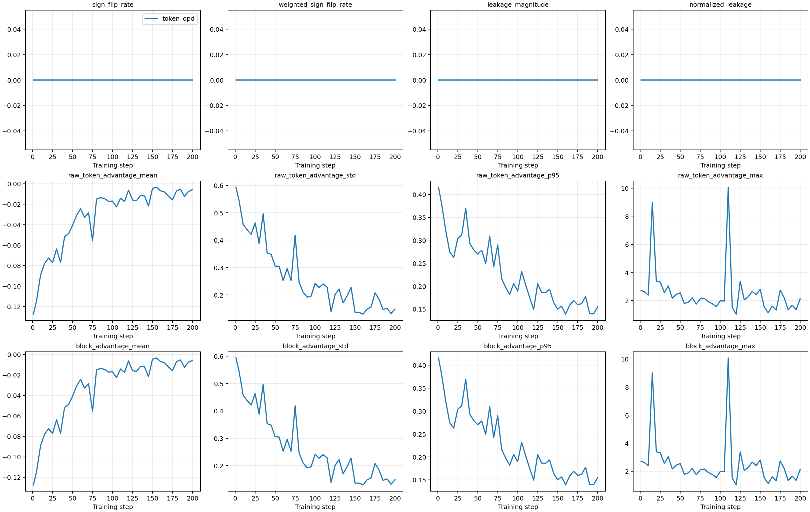
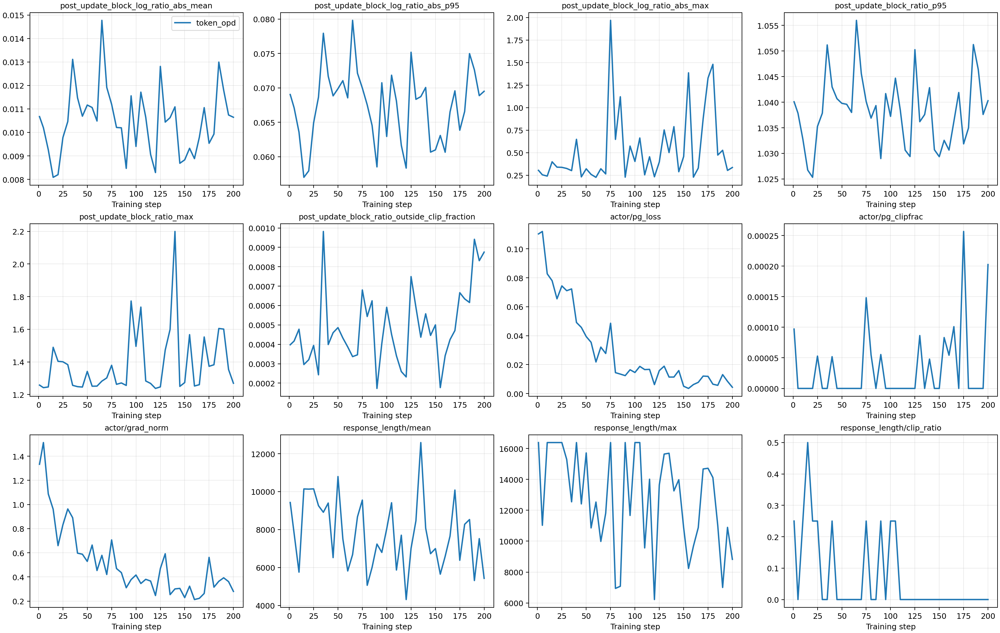
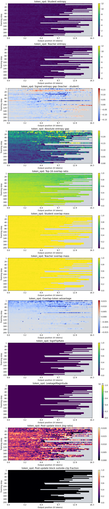
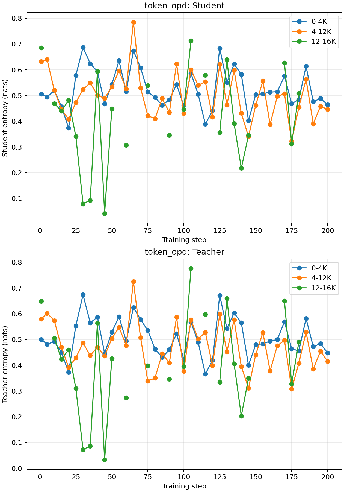
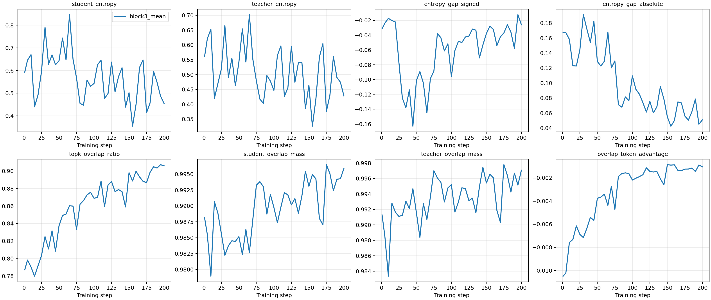
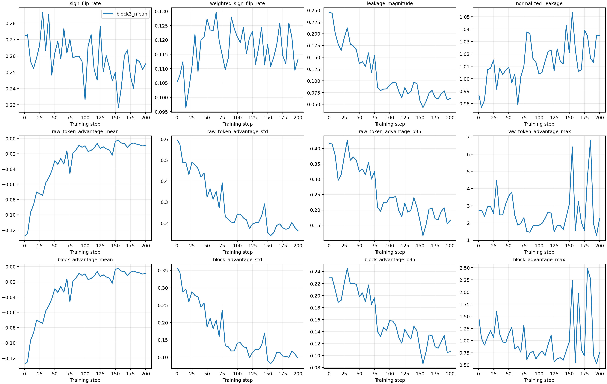
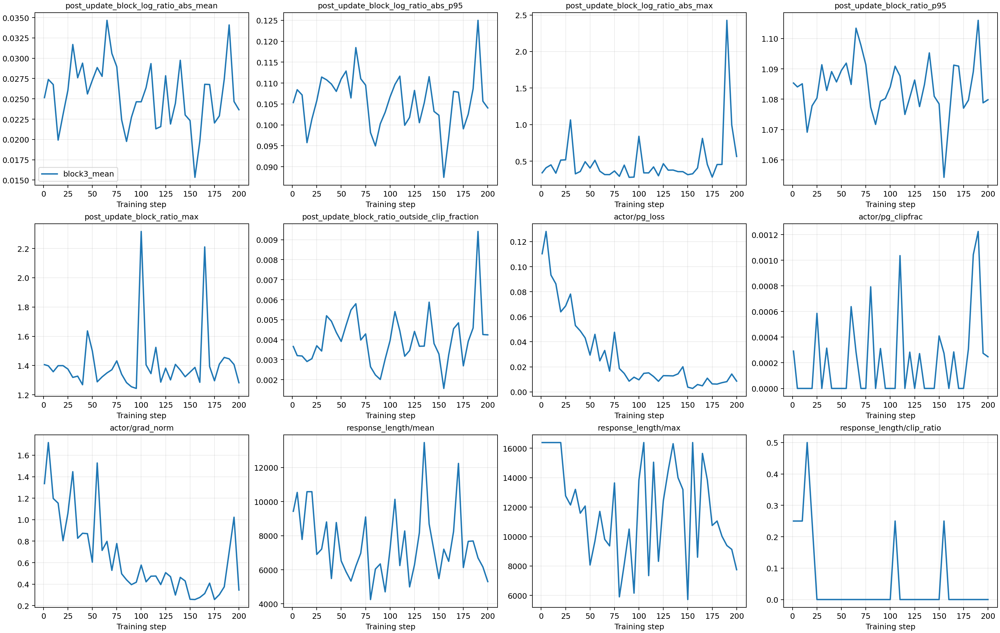
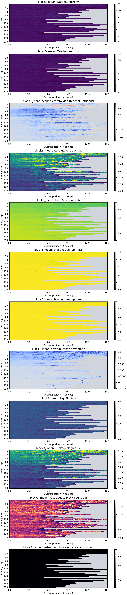
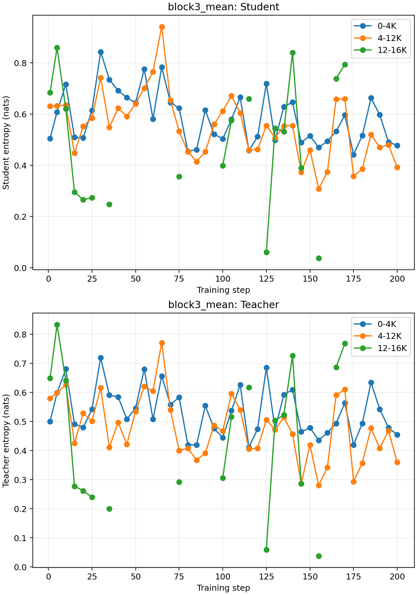

DeepSeek / JustRL Block3 跨师生复现
sampled-token OPD 与 block3_mean 的严格配对验证报告
Step 200 的 macro Avg@8 或 Pass@8 至少有一个点估计不大于 0。
StudentDeepSeek-R1-Distill-Qwen-1.5B
TeacherJustRL-DeepSeek-1.5B
Matched prompt batches41
Bootstrap10,000 paired replicates
实验契约
| Student revision | ad9f0ae0864d7fbcd1cd905e3c6c5b069cc8b562 |
|---|---|
| Teacher revision | 0637e4096c789c67f9eecbe8355e0bdeddede1c2 |
| Training data SHA-256 | cf359f257a320aecb6448e824b7cc34f70e694583be3df7177b14f359b7959cf |
| Eval data SHA-256 | c5c9f1b3f65eb40053cae14c005c39e29443d04acbbabba873e98d64818a9680 |
| Runtime commit | 87274bfb3d1956a385fd0f43591319cb723577d2 |
| Fixed training | DAPO-Math-17K pool; seed 21; 200 steps; batch 4; 8 rollouts; LR 2e-6; max response 16,384. |
| Fixed evaluation | Math500, AIME24, AIME25, AMC23; n=8; seeds 21-28; temperature 1.0; top-p 0.9; max 16,384; thinking off. |
主结果：固定历史 grader
| Checkpoint | Token Avg@8 | Block3 Avg@8 | Delta | Avg 95% CI | Token Pass@8 | Block3 Pass@8 | Delta | Pass 95% CI |
|---|---|---|---|---|---|---|---|---|
| Step 50 | 0.5532 | 0.5377 | -0.0155 | [-0.0380, 0.0060] | 0.7712 | 0.7284 | -0.0429 | [-0.0792, -0.0134] |
| Step 100 | 0.5789 | 0.5544 | -0.0245 | [-0.0462, -0.0044] | 0.7501 | 0.7379 | -0.0122 | [-0.0523, 0.0267] |
| Step 200 | 0.5670 | 0.5828 | 0.0158 | [-0.0031, 0.0356] | 0.7541 | 0.7526 | -0.0015 | [-0.0345, 0.0323] |
Step 200 分任务
| Task | Token Avg@8 | Block3 Avg@8 | Delta | Token Pass@8 | Block3 Pass@8 | Delta |
|---|---|---|---|---|---|---|
| math500 | 0.8470 | 0.8475 | 0.0005 | 0.9460 | 0.9400 | -0.0060 |
| aime24 | 0.3958 | 0.4375 | 0.0417 | 0.7000 | 0.6667 | -0.0333 |
| aime25 | 0.2917 | 0.3083 | 0.0167 | 0.4667 | 0.5000 | 0.0333 |
| amc23 | 0.7334 | 0.7380 | 0.0045 | 0.9036 | 0.9036 | 0.0000 |
Step 200 prompt 级配对
| Metric | Block3 win | Tie | Block3 loss |
|---|---|---|---|
| Avg@8 | 93 | 454 | 96 |
| Pass@8 | 5 | 630 | 8 |
敏感性分析：内置 VERL grader
| Checkpoint | Token Avg@8 | Block3 Avg@8 | Delta | Avg 95% CI | Token Pass@8 | Block3 Pass@8 | Delta | Pass 95% CI |
|---|---|---|---|---|---|---|---|---|
| Step 50 | 0.3683 | 0.3545 | -0.0138 | [-0.0337, 0.0053] | 0.5373 | 0.5040 | -0.0333 | [-0.0677, -0.0068] |
| Step 100 | 0.3897 | 0.3670 | -0.0227 | [-0.0430, -0.0041] | 0.5192 | 0.5045 | -0.0147 | [-0.0558, 0.0255] |
| Step 200 | 0.3775 | 0.3921 | 0.0146 | [-0.0031, 0.0329] | 0.5207 | 0.5187 | -0.0020 | [-0.0348, 0.0313] |
训练诊断与位置热力图
token_opd





block3_mean





结论范围：一个严格配对的 training seed。题目分层 bootstrap 量化固定 checkpoint 下的 prompt 不确定性，不能替代多 training-seed 方差。